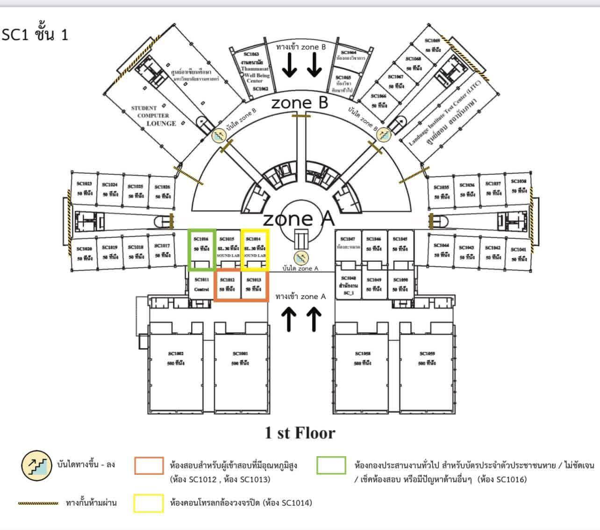

สแกน QR แล้วทดลองเดินตามจุดสีน้ำเงิน
เริ่มจาก QR ที่ Zone A หรือ Zone B จากนั้นอนุญาตเซนเซอร์ ตั้งทิศทาง และเดินจริงเพื่อทดลองเลื่อนจุดสีน้ำเงิน (เป็นเพียงตำแหน่งประมาณ ไม่ใช่ GPS)
คุณสามารถทดลอง QR โดยกดปุ่มจำลองด้านบนได้
🧪 ทดลองติดตามการเดินด้วยเซนเซอร์
ใช้โทรศัพท์จริงและเปิดเว็บผ่าน HTTPS (หรือ localhost สำหรับการทดลองบนคอมพิวเตอร์) วางโทรศัพท์ให้แบนและหันหัวโทรศัพท์ไปทางที่เดิน ขั้นแรกเลือก QR ให้ตำแหน่งเริ่มต้นก่อน
การจำลองก้าวไม่ใช่ข้อมูลจากเซนเซอร์จริง; การเคลื่อนที่จากเซนเซอร์ต้องมีการอนุญาต นับก้าวได้ และตั้งทิศทางสำเร็จ ระบบไม่จับตำแหน่งตลอดเวลาเมื่อปิดหน้าเว็บ
แผนผังอาคาร SC1

ลิงก์สำหรับ QR เพื่อรีเซ็ตตำแหน่ง
เมื่อเว็บไซต์ขึ้นโฮสต์ HTTPS แล้ว ให้ใช้ URL ของเว็บไซต์นั้นต่อท้ายด้วย ?start=a และ ?start=b ตามลำดับ สร้าง QR โดยใช้ไฟล์ make_qr.py ที่แนบให้
ลิงก์ file:// บนคอมพิวเตอร์ยังสแกนจากโทรศัพท์เพื่อเปิดหน้าเดียวกันไม่ได้ ต้องเผยแพร่เว็บไซต์บนโฮสต์ก่อน หรือใช้เว็บเซิร์ฟเวอร์ภายในเครือข่ายพร้อม URL ที่โทรศัพท์เข้าถึงได้